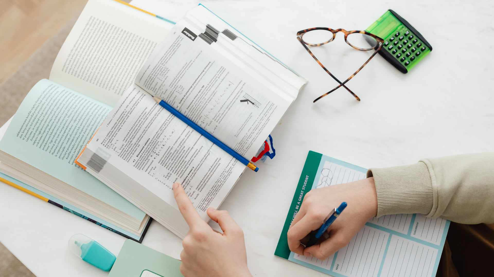

Game online bisa menjadi hiburan yang luar biasa: melatih strategi, mempererat pertemanan, bahkan memberikan rasa pencapaian yang nyata. Namun ketika game mulai mendatangkan lebih banyak stres daripada kesenangan, atau ketika kamu merasa tidak bisa berhenti meski sudah ingin berhenti, ada sesuatu yang perlu diperhatikan.
Kecanduan game tidak terjadi dalam semalam. Ia adalah proses bertahap yang dimulai dari kebiasaan-kebiasaan kecil yang tampak tidak berbahaya. Dan karenanya, pencegahan pun harus dimulai dari kebiasaan-kebiasaan kecil yang juga tampak sederhana, namun efeknya jauh lebih besar dari yang kita bayangkan.
Kenapa Game Online Bisa Bikin Stres?
Secara paradoks, sesuatu yang dimulai sebagai pelarian dari stres justru bisa menjadi sumber stres baru. Ini bukan kebetulan, melainkan hasil dari desain game itu sendiri yang memang dirancang untuk terus melibatkan pemain secara emosional.
Menurut dr. Kristiana Siste, SpKJ(K), pakar kesehatan jiwa dari Universitas Indonesia, ada sebuah siklus berbahaya yang terjadi pada gamer yang sudah mengalami masalah: mereka menggunakan game untuk melarikan diri dari stres kehidupan nyata, namun game sendiri kemudian menghasilkan stres baru, mulai dari tekanan rank, konflik dengan tim, hingga frustasi karena kalah. Kedua jenis stres itu lalu saling memperburuk.

Beberapa faktor utama yang membuat game online lebih stresful dibanding game offline antara lain: perbandingan sosial yang konstan melalui leaderboard dan rank, tekanan performa tim yang menjadikan kegagalan personal terasa seperti mengecewakan orang lain, serta notifikasi dan event terbatas waktu yang menciptakan kecemasan untuk selalu terhubung.
Tanda-Tanda Kamu Sudah Bermain Tidak Sehat
Sebelum bicara solusi, penting untuk mengenali masalahnya. Menurut Kementerian Kesehatan RI dan berbagai referensi klinis berbasis DSM-5 serta WHO ICD-11, berikut adalah sinyal-sinyal yang perlu kamu waspadai:
Marah atau Murung Saat Diganggu
Ketika ada yang menginterupsi sesi bermainmu, baik orang tua, teman, atau bahkan alarm yang kamu pasang sendiri, dan kamu merespons dengan marah atau kesal yang tidak proporsional.
Selalu "Satu Game Lagi"
Kamu sudah berulang kali berkata dalam hati "ini yang terakhir," tapi selalu lanjut bermain. Ketidakmampuan menghentikan diri sendiri ini adalah salah satu kriteria utama gaming disorder menurut WHO.
Mengorbankan Tidur demi Game
Bermain hingga dini hari secara rutin, atau memilih game dibanding tidur yang cukup. Kurang tidur kemudian memperburuk kemampuan regulasi emosi, yang justru membuat kamu lebih rentan terhadap stres gaming.
Performa Nyata Menurun
Nilai akademik anjlok, pekerjaan terbengkalai, atau kewajiban sehari-hari sering terlewat karena dikorbankan demi waktu bermain. Ini adalah tanda bahwa game sudah melampaui posisinya sebagai hiburan.
Menyembunyikan Durasi Bermain
Kamu merasa perlu berbohong atau menyembunyikan berapa lama kamu bermain dari orang-orang terdekat. Kebutuhan untuk menyembunyikan sesuatu adalah sinyal kuat bahwa kamu sendiri tahu ada yang tidak beres.
Cemas saat Tidak Bisa Bermain
Merasa tidak tenang, gelisah, atau terus memikirkan game saat sedang tidak bermain, di kelas, saat makan, atau bahkan saat bersama orang-orang yang kamu sayangi.
Ubah Mindset: Game adalah Hiburan, Bukan Kewajiban
Perubahan paling fundamental yang bisa kamu lakukan tidak memerlukan aplikasi atau alat apapun. Ia hanya membutuhkan satu pertanyaan jujur: "Apakah aku bermain karena ingin, atau karena merasa harus?"
Tes sederhana: Bayangkan kamu membatalkan rencana bermain malam ini. Apa yang kamu rasakan? Jika jawabannya adalah lega, berarti kamu masih memegang kendali. Jika jawabannya adalah cemas, bersalah, atau kecewa berat, ini adalah tanda bahwa game sudah mulai mengendalikanmu, bukan sebaliknya.
Sistem daily quest dan login reward dalam banyak game sengaja dirancang untuk menciptakan rasa "wajib bermain setiap hari." Setiap kali kamu melewatkan login reward, otak merasakannya sebagai kerugian, bukan sekadar melewatkan kesenangan. Ini adalah teknik psikologis yang disebut loss aversion, dan game modern menggunakannya dengan sangat cerdas.
Mengubah mindset ini berarti secara sadar memisahkan dirimu dari ilusi kewajiban tersebut. Melewatkan event seasonal atau login reward bukanlah kerugian nyata. Tidak ada yang hilang dari hidupmu selain beberapa item virtual yang tidak akan pernah kamu ingat dalam beberapa tahun ke depan.
Tetapkan Batas Waktu yang Realistis
Penelitian dari Oxford Internet Institute oleh Dr. Andrew Przybylski (2021) menemukan bahwa bermain game sekitar satu jam per hari justru berkorelasi positif dengan kesejahteraan psikologis remaja, lebih tinggi dari mereka yang tidak bermain sama sekali. Namun, setelah melewati tiga jam per hari, korelasi positif itu mulai berbalik arah.
Berikut adalah kerangka praktis untuk menetapkan dan mematuhi batas waktu bermain:
- Tentukan batas sebelum duduk, bukan sesudah mulai. Keputusan yang dibuat sebelum sesi bermain jauh lebih kuat dari niat yang muncul di tengah kesenangan. Tulis jam berhenti di sebuah sticky note dan tempel di layar monitor atau dekat perangkat bermainmu.
- Gunakan timer eksternal. Jangan mengandalkan timer di dalam game atau judgement waktu pribadi karena keduanya bisa dengan mudah diabaikan. Gunakan timer fisik, asisten suara, atau aplikasi screen time yang terkunci dengan kode yang tidak kamu hafal sendiri.
- Terapkan aturan 20-20-20. Setiap 20 menit bermain, luangkan 20 detik melihat objek sejauh 20 kaki (6 meter). Ini membantu kesehatan mata dan secara tidak langsung membuatmu lebih sadar akan berlalunya waktu.
- Tidak bermain saat capek atau lapar. Kondisi fisik yang buruk melemahkan kemampuan self-control. Sesi bermain yang paling sering berujung "kehabisan waktu" biasanya dimulai saat kamu sudah kelelahan.
- Tetapkan game-free zone dan game-free days. Minimal satu hari per minggu bebas dari game sama sekali. Ini membantu otakmu mengkalibrasi ulang sistem reward-nya secara alami.
Banyak gamer yang merasa sudah "membatasi" waktu bermain karena mengatur timer, tapi kemudian terus menambah waktu saat alarm berbunyi. Jika ini terjadi lebih dari dua kali berturut-turut, pertimbangkan untuk melibatkan orang lain sebagai akuntabilitas eksternal.
Kelola Emosi Saat dan Setelah Bermain
Stres dalam game hampir tidak bisa dihindari sepenuhnya, terutama dalam game kompetitif. Yang bisa dikelola adalah responsmu terhadap stres tersebut. Reaktivitas emosional yang tinggi dalam game bukan hanya tidak produktif, tapi juga menjadi salah satu pendorong terkuat untuk terus bermain dalam kondisi tidak sehat.
Ambil Jeda Setelah Kekalahan Beruntun
Aturan yang direkomendasikan oleh banyak psikolog olahraga dan gaming coach: jika kalah dua atau tiga kali berturut-turut, wajib berhenti bermain minimal 15–30 menit. Bermain dalam kondisi frustrasi justru menurunkan performa dan memperdalam stres.
Teknik Pernapasan 4-7-8
Tarik napas 4 detik, tahan 7 detik, hembuskan 8 detik. Metode ini terbukti secara klinis mengaktifkan sistem saraf parasimpatik dan menurunkan respons stres akut dalam hitungan menit. Lakukan sebelum memulai sesi bermain atau saat merasa emosi memuncak.
Jurnal Emosi Gaming
Catat singkat bagaimana perasaanmu sebelum dan sesudah bermain selama satu minggu. Seringkali pola yang terlihat sangat mengejutkan: banyak gamer menemukan bahwa mereka hampir selalu merasa lebih buruk setelah sesi panjang, bukan lebih baik.
Dekompresi Aktif Sebelum Tidur
Jangan langsung tidur setelah bermain game berjam-jam. Berikan jeda 30–60 menit dengan aktivitas fisik ringan, mandi air hangat, atau membaca buku. Tidur langsung setelah gaming intens mengganggu kualitas tidur dan memperpanjang aktivasi sistem stres.
Bangun Lingkungan Gaming yang Sehat
Psikologi lingkungan mengajarkan bahwa perilaku kita sangat dipengaruhi oleh konteks fisik di sekitar kita. Mengandalkan tekad semata untuk membatasi gaming adalah strategi yang terbukti tidak efektif jangka panjang. Lebih efektif adalah mengubah lingkunganmu sehingga kebiasaan sehat menjadi pilihan yang paling mudah.
- Jangan letakkan perangkat gaming di kamar tidur. Kamar tidur harus diasosiasikan otak dengan istirahat dan relaksasi. Kehadiran perangkat gaming di tempat tidur meningkatkan risiko bermain hingga larut malam secara signifikan.
- Nonaktifkan semua notifikasi game saat belajar atau bekerja. Notifikasi adalah hook pertama dari loop adiksi. Setiap ping dari game adalah undangan untuk membuka aplikasi, yang kemudian membuka pintu sesi bermain yang tidak direncanakan.
- Buat area bermain yang terpisah dan nyaman secara ergonomis. Memiliki "gaming zone" yang jelas secara fisik membantu otak memahami bahwa gaming adalah aktivitas terbatas ruang dan waktu, bukan sesuatu yang bisa dilakukan kapan saja dan di mana saja.
- Beritahu orang-orang di sekitarmu tentang batas waktumu. Akuntabilitas sosial adalah salah satu pendorong perubahan perilaku terkuat yang diketahui ilmu psikologi. Ketika orang lain tahu batas waktu bermainmu, rasa tidak nyaman sosial menjadi motivasi tambahan untuk mematuhinya.
- Hapus aplikasi game dari homescreen atau folder utama. Hambatan kecil sekalipun, seperti harus mencari aplikasi lebih lama, secara bermakna mengurangi frekuensi membuka game secara impulsif.
Jaga Keseimbangan Dunia Nyata dan Virtual
Salah satu ciri utama kecanduan game yang diidentifikasi WHO adalah ketika dunia virtual mulai terasa lebih nyata atau lebih memuaskan dibanding kehidupan nyata. Ini bukan masalah yang diselesaikan hanya dengan mengurangi waktu bermain, melainkan dengan secara aktif membangun kehidupan nyata yang cukup memuaskan sehingga game tidak perlu menjadi satu-satunya sumber kesenangan.
Pertanyaan untuk direfleksikan: Di luar game, apa aktivitas yang membuatmu merasakan kesenangan, pencapaian, atau koneksi sosial yang nyata? Jika kamu kesulitan menjawab pertanyaan ini, maka membangun aktivitas tersebut adalah langkah paling penting yang bisa kamu ambil sekarang.
Penelitian tentang adiksi behavioral secara konsisten menunjukkan bahwa intervensi yang paling efektif bukan semata-mata menghilangkan perilaku adiktif, melainkan menggantinya dengan sesuatu yang memenuhi kebutuhan psikologis yang sama. Gaming memenuhi kebutuhan akan pencapaian, komunitas, dan stimulasi. Temukan cara lain untuk memenuhi ketiga kebutuhan tersebut.
- Olahraga atau seni bela diri memberikan rasa pencapaian fisik yang nyata dan komunitas yang solid.
- Proyek kreatif seperti musik, desain, atau pemrograman memenuhi kebutuhan akan tantangan intelektual dan progres yang terukur.
- Komunitas offline, dari organisasi kampus hingga klub hobi, memenuhi kebutuhan sosial yang sering kali menjadi alasan terkuat orang bertahan dalam guild atau komunitas game.
- Volunteering atau kontribusi nyata memberikan rasa bermakna yang jauh melampaui apa yang bisa diberikan oleh poin pengalaman atau rank dalam game manapun.
Kapan Harus Mencari Bantuan Profesional?
Semua strategi di atas efektif untuk pencegahan dan intervensi dini. Namun ada titik di mana self-help tidak cukup, dan justru menunda mencari bantuan adalah keputusan yang merugikan diri sendiri.
Kamu sudah mencoba membatasi bermain game secara serius lebih dari tiga kali dan selalu gagal. Pola gaming sudah berlangsung lebih dari 12 bulan dan sudah mengganggu performa akademik, pekerjaan, atau hubungan interpersonal secara signifikan. Kamu mengalami gejala seperti kecemasan, depresi, atau perasaan tidak berharga di luar konteks game. Atau kamu menggunakan game sebagai satu-satunya cara mengatasi emosi negatif dan tidak bisa membayangkan menghadapi stres tanpa game.
Cognitive-Behavioral Therapy (CBT) adalah pendekatan terapeutik yang paling banyak didukung oleh bukti ilmiah untuk menangani gaming disorder. Terapis yang terlatih dapat membantumu mengidentifikasi pola pikir yang memicu perilaku gaming berlebihan dan membangun strategi koping yang lebih sehat. Mencari bantuan bukan tanda kelemahan; ia adalah tanda bahwa kamu serius menghargai kualitas hidupmu.
- Kementerian Kesehatan RI — Faktor-Faktor Penyebab Kecanduan Game Online
- Alodokter — Ciri-Ciri Kecanduan Game Online dan Cara Mengatasinya
- Halodoc — WHO: Kecanduan Game Merupakan Gangguan Mental
- RS Pusat Pertamina — Mengelola Kecanduan Game Online (Gaming Disorder)
- Oxford Internet Institute — Video Games and Wellbeing (Przybylski, 2021)